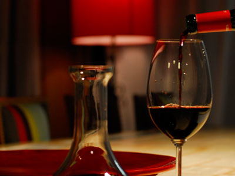
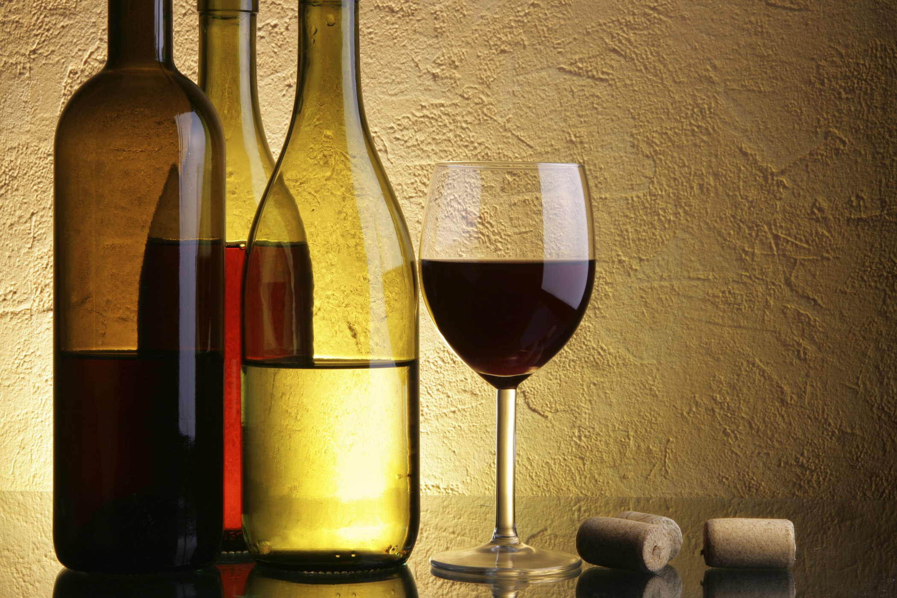

|  |
|
¿Que vinos Catar?
En este apartado hablaremos sobre que vinos degustaremos los días de cata, normalmente estos vinos serán los que se muestran en el apartado de "Hoy descorchamos…" por lo tanto siempre serán vinos especiales o con alguna singularidad.
Vinos a Catar
- -VINO DE PORTO (Bodega Sandeman)
- -VINO RIBERA DE DUERO (Dominio de Pingus)
- -VINO VALDEPEÑAS (Baltasar)
- -VINO RIBEIRO (Val de Souto Blanco)
- -VINO FIGUERO NOBLE
- -VINO MAS LA PLANA
- -VINO BARÓN DE LAS TRES VIÑAS
- -VINO FURVUS
- -VINO GARMONA IMPERIAL
- -VINO EL SEÑORITO
- -VINO PAGO BALAGUESES MERLOT
|
 | |